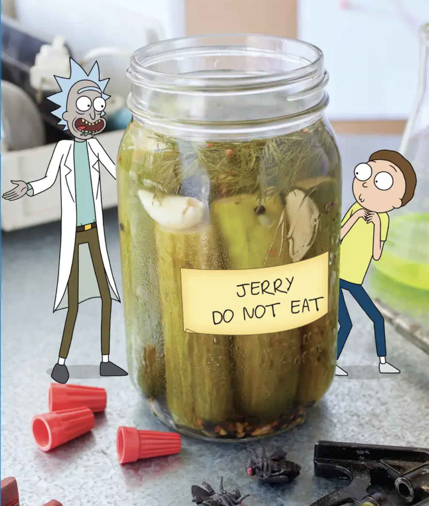

Pickle Rick's Transformation Brine

Description
You ready to make some gorgeous PICKLES, Morty? I'm talking some reaaaaaal beauties. Perfect, sour, wart-covered representations of humanity's ability to TRANSFORM NATURE into something BETTER! But so simple, even a remedial mind like yours can do it.
But for real - you BETTER DO THIS ONE. The public demands more "Pickle Rick" - but I need some DECOYS. So...y'know... try to make 'em reaaal SULTRY PICKLES, just like Grandpa.
Ingredients
1 sealable jar large enough to hold the pickling items (tall, wide-mouth 24-ounce mason jar)
6 Persian cucumbers, rough ends cut off
1/2 tablespoon kosher salt
1/2 tablespoon black peppercorns
1/2 teaspoon coriander seed
1/4 teaspoon crushed red pepper
3 cloves garlic, lightly crushed
2 to 3 sprigs of fresh dill
Steps
Combine water, both white and rice vinegars, salt, and sugar into a measuring cup, then set aside.
In a warm pan, toast peppercorns, coriander, red pepper flakes, fennel seed, and bay lead until fragrant. Move them often so as not to burn.
Conbine toasted spices and brine mixture into a medium pot and bring to a simmer.
Place crushed garlic, dill, and cucumbers into the pickling jar and make sure everything fits nicely.
Carefully pour hot brine into the jar until it covers the cucumbers.
Seal the jar and allow it to cool to room temperature before refrigerating. Pickles are ready to eat the next day, however, the longer they sit the more flavorful they become. Can be stored in the fridge for about 2 months.